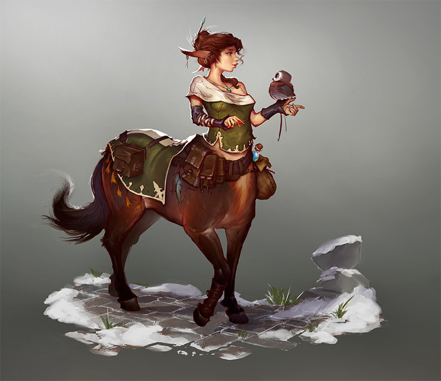
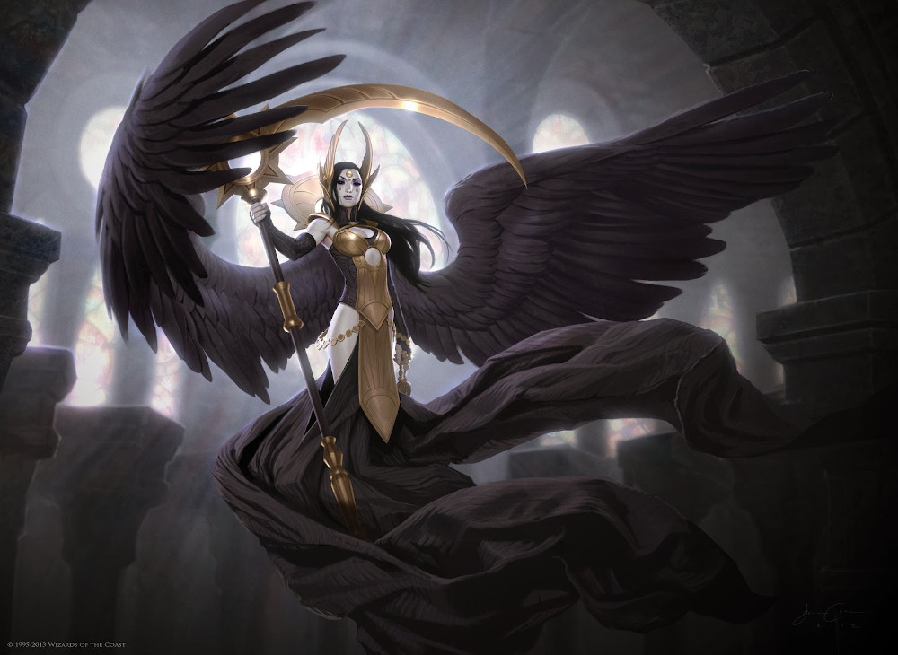
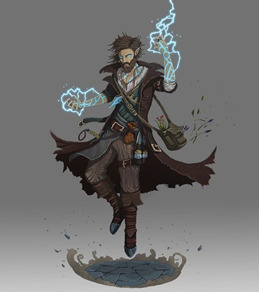
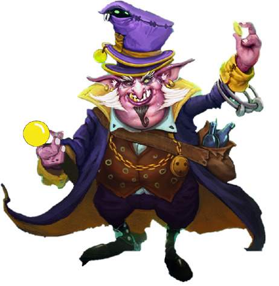

Liste von NPCs, gelistet unter wo sie uns das erste Mal begegnet sind; wichtige Personen haben eine eigene page
Sagash
Urien Adoris:
- Stiefbruder von Hadan, dünklere Haut als Hadan (schwarz), starker Baraxianischer Akzent, etwas stärker gebaut, etwas älter als Hadan
- ist auf dem Siryus verschwunden, vielleicht An'Shatra, wahrscheinliche beste Option ist Sklaverei

- Zentaurin
- rote Haare mit Spieß, lange Hörner nach hinten
- Satteltaschen
- Kontakt von Hadan für seine Waren
- ist gegen Nazir vorgegangen (unbekannt wie, involviert Halbling Nori) und deshalb von diesem gefangengenommen worden
- zuletzt gesehen im Keller von Nazir, kurz vor ihrer Hinrichtung mit ihrem Vater Dorian
- Kontakt von Quinn und Kroft, weiß wo die grüne Elderit Shard ist
- laut Tatzel Eigentümer des "Dampfenden Teppichs"
- Händler für Exotische Waffen aus aller Welt bei (31)
- der "Stahlbeißer" (war Kämpfer in der Arena)
- bietet proficiency für exotic weapons; piercer/slasher/crusher feat Kurse an 3 Abenden (2h, sehr auslaugend) für 600 gp
- sehr angetan von Durbuls Waffen, bietet 2k gp für die Axt
- Gildenleiter der Faharas seit Lanalas Vater verschwunden ist
- war vorher schon im Rat von Sagash
- Leute sind nicht mit seiner Leitung zufrieden, Handelszehnt inzwischen 50%
- ist wohl Vampir, charmed Miri
- hat ziemlich arg aussehende Leibgarde (stellen sich später als Leute von Ultimoz heraus) und eine Limousinen-Kutsche mit 6 Pferde
- wohnt in riesiger Villa "Alshatreth Estate" (weiß nur Miri)
- scheint von Ultimoz kontrolliert zu werden - war früher wohl anders
- will wohl geheim Sagash übernehmen
- frisst Gehirne, Magiebegabte sind Leckbissen
- hat schwarz/zackig gepanzerte Soldaten, weiße Vollvisiere, 2H-Schwerter mit stumpfer Griff in der Mitte zum half sworden, grün pulsierende Runen in Waffen und Rüstung
- mindestens einer davon Drow (bleiches Grau, Tiefe Markierungen wie Narben) - bewachen Nazir
- "allsehender Meister"
- alter, blinder Mensch
- Priester der Othys
- lebt in einem verlassenen Tempel, scheint aber mehr an ihm dran zu sein
- junge Frau mit dunklem Teint
- Captain der Dshadima
- Tochter von Jango Jaffa, seine Machenschaften scheinen ihrer Karriere Probleme zu machen
- alt, gekrümt, zwielichtig aussehender Mann, kaum noch Haare
- violette, schöne Robe (anders als die der Schwarzen Sonne, Kleidung der höheren Mitglieder der Glücksspielsgilde)
- hat Golem-Wächter
- Tiefengnom
- Inhaber von "Brahmbeins getrocknete Kräuter"
- neuer Besitzer vom komischen Goblin, den die Party mal von TEDDY geschenkt bekommen hat
- Vermieter von Fliegenden Teppichen in der Nähe vom Tempelplatz in Golgamesh
- Durbul intimitated ihn dass er keinen Scheiß probieren soll - er reagiert seltsam, gibt der Party einen Gratisteppich und nimmt nicht mal angebotenes Geld von Jonik
- außerdem gibt er uns eine Art Visitenkarte, die Rabatte bei anderen Händlern zu geben scheint
- Captain der Dshadima
- grünhäutiger Dragonborn
- verspricht uns Gold und Ehrung dafür dass wir den An'Shatra Angriff abgewehrt haben
- ist Kollege von Farea Jaffar
- Anführer der Geflügelten Bestien in der westlichen Singharas
- Mensch, so 15-16 Jahre alt
- bietet die Hilfe seiner Organisation an (gegen Gold)
- Besitzer der Singenden Kobra (Western Singharas)
- Rakshasa (kennen wir nicht), humanoider, weißer Tiger mit orange glühenden Augen
- rotem Umhang des Lokals, darunter einen grünen Samtanzug
- Wächter über den Eingang in die Unterstadt
- hat Bibliothek und lies viel - bietet Wissen an
- Duergar, Sonnenbrandwunden, viele Tattoos, Oberkörper offen, ziemliche Kantn
- Anführer einer "Archäologen"-Gruppe von Duergar
- hat Kontakte in die Unterstadt
- will dass wir gutes Wort bei Archibald (Mitglied Dun'Amarah) einlegen + 1 drunaisches Artefakt gegen Passwort für Unterstadt
- Faustkampf gegen Durbul, der gewinnt nur knapp
- Attica und Joniks Omen-Kontakt
- alter Freund von Grim, waren beide in den Neun Dolchen
- nach Zerschlagung der Dolche durch Omen habe er sich einer Drunaischen Gruppe angeschlossen, Anführerin Vesiphone, Ziel Omen unterwandern - geschafft, er jetzt dort rechte Hand

- Schwester von Arnaud Levine
- wollte Omen unterwandern und hat das auch geschafft, führt Omen jetzt an
- schwebt, meterlange, herabhängende Kleider
- pechschwarze Flügel, schlagen aber nicht
- bleiches Gesicht
- goldener Kopfschmuck, Heiligenschein, goldene Rüstung
- neben ihr schwebt eine Sichel mit gekrümmten Kopf, goldener Stahl
- pechschwarze, lange Haare
- schwarze Augen, pupillenlos
- nicht menschlich
- war Wielderin von Kuranil bevor die zu Durbul kam
- bestraft die Seele von Henceworth
- befreit einen Seelensplitter von Roldar aus der Axe of Concerning Effects
- alter Abenteurer
- hat alle 5 Tunnel der Unterstadt kartographiert
- angeblich Hoox gehooked, vielleicht zu finden in Hooxville
- Mensch, 31 Jahre, 175 groß, gezwirbelter Mustache
- ursprünglich aus Sephia von Sturmküste
- orang-rote Haare, Irokesen, Bart in Zöpfen
- muskulös
- schlecht sitzender, billiger Anzug
- Besitzer von Fighting Pit, Adventuring Gear, Funeral Services
- stirbt durch entlaufene Bulette
- Loxodon, Zigarre mit goldenem Emblem im Mund
- seit kurzem Unterstadt-Boss in der Smelly Oyster
- hat gute Verbindungen zur Nirima und Zugang zu deren besten Casinos
- behauptet Henceworth hatte 25k gp Schulden bei ihm - und durch den Mord jetzt die Party
- behauptet JJ sei von falschem Alsinai-Agenten zu SK1 gebracht worden
- behauptet Salavasta sei Hoox abhängig
- Inhaber von Archibald's Special Artefacts in der Unterstadt
- Hobgoblin mit fest sitzendem Anzug
- Mitglied der Dunamarah
- bekommt Grims Namen
- Jonik verplappert sich und verrät dass Raktor uns das Passwort zur Unterstadt "verraten" hat
- will unbedingt dass Grim+Jonik zu Kanthor (Anführer Dunamarah) gehen, weil dir drunaische Artefakte verkauft haben und die jetzt gefragt sind
- macht Anflüge von Drohungen
- Halbling mit Irokesenschnitt, zu Bündeln zusammengebunden
- am ganzen Körper tätowiert
- Abhängig von Hoox
- Freund von Salavasta
- wohnt in Hooxville
Death Maidens (Piratenflotte)
Hiro La'Ravia:
- früher Kapitän
- unter ihm Sklavenhandel
- gestürzt von Yara und Valresh (weil kein Sklavenhandel mehr)
- früher First Mate unter Hiro und Yara, jetzt Kapitän
- bissl Arschkriecher
- war Kapitän
- Frau von Durbul
- hat freiwillig abgedankt und ist mit Durbul nach Port Dalos gezogen
- ermordet von Shakal, entgegen Versprechen gegenüber Durbul; vielleicht weil Schwarze Sonne Beziehungen zu Hiro oder Valresh?
Lauris
Towncryer:
- junger, männlicher Mensch
- Name unbekannt
- scheint ein Netzwerk von Nachrichten zu geben, die über Eulen verteilt werden: "Eulenpost"
- scheint journalistische Integrität zu haben, die aber kaufbar ist
- prunkvoll in Sagash-Wohlstandsmode mit Turban gekleideter Mann; überall Klunker, Ringe; Sogar Edelsteine zwischen den Zähnen
- links und rechts bewachend stehen 2 Goliath
- behauptet Archäologe zu sein wissenschaftliches Interesse an den Ruinen von Drusk zu haben
- eine Gruppe von Untergebenen sei eine Woche überfällig, sollte in die Schwarze Krypta eindringen
- war gelogen, er verfolgt die Gruppe zur Schwarzen Krypta und erzwingt sich den Vortritt - stirbt dabei
- hat auf Brust Tattoo von Dun'Amarah, recht einflussreichem Verbrechersyndikat aus Sagash, auf Grabräuberei spezialisiert
- recht junger Mensch
- hat Gans Ferdinand schon immer, gehörte seinem Vater
- betreibt Fähre (eigentlich Flussboot) von Lauris nach Sagash
- sein Geschäft knapp vor Ende, wenn er nicht nach Reparatur seine Ladung abliefern kann - Problem mit den Wüstenhaien
- pro-Revolution
- rechter Arm verkümmert von Krankheit, von Roldar geheilt
- Durbul killt seine Gans, weil die magisch und von Weltuntergang usw. spricht - glaubt an Polymorph, war es aber nicht
- hatte keine Vaterfigur, nur Mutter, bescheidenes Leben
- es gibt Erinnerungen wo Mutter mit der Gans im Geheimen geredet hat
- Mutter lebt noch, ist Weberin
- er war als Kind in Sagash
- Mutter hat ihm Gans mitgegeben
- einer der sieben Drachen von Drunai
- Brass Dragon
- war Herold von Kuranesh
- stand unter Einfluss Apokais in Drusk, bevor wir ihn befreiten
- hilft jetzt wieder Kuranesh
- meint er würde uns helfen
- männlicher Zwerg, stattlich, schwarze Haare, schöne Rüstung
- war Anführer der Stadtwache in Lauris, ist jetzt Kapitän der Drunaischen Armee
- schaut aus wie guter Kämpfer, hat Abzeichen der Drunaischen Armee
- scheint ziemlich pro Revolution zu sein
- wir beauftragen ihn damit die Krone und die Rüstung Kuraneshs zu Fyona zu bringen
- geben im das Pferd von Nethalyn und eine Healing Potion
- er bietet uns an uns auf dem Laufenden zu halten, wenn wir uns bei ihm melden
Gwydur
Rayna:
- Elfin, in Felle gekleidet, Umhang aus geflochtenen Blättern
- weiblich, weißliches Haar
- hat zwei kleine Schweine als Freunde: Ixbo und Azi
- hat druidische Fähigkeiten und hilft uns beim Kampf gegen die Drei Schwestern
- Elf
- silberne, schöne verzierte Rüstung, mit verziertem Helm, Speer
- scheint eine Art Wachkommandant zu sein?
- die "Seherin", Anführerin der Waldelfen
- zierliche Gestalt in seidenen Gewändern, hellblonde Haare am Rücken hinunter
- Krone aus Silber und Elfenbeingeweih
- hat jungen, grünen Drachen "Cami", von ihrer "Schwester" aus den Arkenwoods - spricht wohl von Shirvana
Valun
- Klaudio Klapperschlang:
- nervöser Gnome in neonfarbige Gewänder (Wildkatzenmuster, glänzend), Irokese in Vokuhila übergehend, Ketten mit Klunkern um den Hals
- Anführer der "Menacing Menagerie", Wanderzirkus/Zoo mit exotischen Tieren
- will uns anheuern einen entflohenen jungen Roc zu fangen, wir lehnen ab
- Albatross: Anführer der Revolution in Valun; großgewachsener, rothaariger Mensch/Mann mit Bart
- Jakobinius: Herr der Stallungen, etwas zwielichtig, versucht uns 50g pro Pferd abzuknöpfen, scheint nach einiger Diskussion seine Arbeit aber Ernst zu nehmen
- Monk in weißen Roben:
- verbundenen Augen, roter Stoff von Schulter herunter, verzierter Stock im Gürtel, spricht kein Wort der Verteidigung
- scheint Anführer ("Meister") der Mönche zu sein
- verzierter Stock kann sich in viele verschiedene Waffen verwandeln
- ist wahrscheinlich ein Adalant
- Gash'we
- uralter Mann, schaut aus wie Mensch
- voller Falten, braune Roben, Mensch, nicht viele Haare, Bart, scheint blind zu sein, aber kann auch irgendwie sehen
- hat Familiar (?) namens Synco, eine Art Homunkulus, großaugig, zerfledert
- spricht kryptische Dinge, scheint sehr viel zu wissen: über jeden von uns, über Apokai, über die drei schwestern
- eine jüngere Version (?) scheint im Arbitrarium Bibliothekar zu sein, hat Pseudodragon als Familiar
- einer der Gründer der Scarlet League
- hat bei der Verbannung Apokais mitgearbeitet
- ist jetzt Berater von Kuranesh im Arbitrarium
Arden
- Eladrin Ferell: Anführer der Revolution von Arden
Fort Dalos und Dalos
- Ebron: Besoffener der Stadtwache
- Bexy: dwarf female, Chef vom Hängenden Dieb, in der "Blauen Feder" Untergrund-Org.
- Jerry: Halbelf, schlaksig, Kellner im Hängenden Dieb, Ehemann von Betzi
- Clay: Bettler, Halbelf, älter, Alkoholiker, Ehemann der alten Gran
- "Schleicher": schwarze Kutte mit Hood, schwarz-violettes Gewand darunter, pfeife, scheint Grim zu beobachten, wahrscheinlich Mörder von Quinn, wahrscheinlich Mensch/Elf/Halbelf (Schuhe, aussehen); später stellt sich heraus: heißt Velmonde, Kultist, Mörder, wir töten ihn
- Oskar Reeves: Bürgermeister, fetter Mensch, schöne Seidengewänder, Monokel, unsportlich
sagt Menschen paranoid, Bürger nahe Wald verschwunden, vielleicht Kult in arkenwoods (gerüchte)? schon mehrere Truppen Stadtwachen in Wälder verloren
hat Pakt mit Kultisten: keine Manticoreattacken gegen Lieferungen von gefangenen
hat Pakt mit Donovan, der auch Gefangene liefert
kommt von angesehener Kaufmannsfamilie
hat Pakt mit Kultisten: keine Manticoreattacken gegen Lieferungen von gefangenen
hat Pakt mit Donovan, der auch Gefangene liefert
kommt von angesehener Kaufmannsfamilie
- Thorben: Assistent/Schreiber von Bürgermeister, länglich, schmal
- Leutnant Lonovel Nielev: kompetent, groß, Chef Stadtwache, weiß laut Fyona und Durbul eher nichts von Reeves' Pakt mit Kultisten
- Sera: Rezepzionistin der Goldenen Forelle, blond, Menschenfrau, Mitglied der Blauen Feder
- Zora, wohnt nähe Rathaus, rothaarig, Anfang 20, Menschenfrau, teures Appartement, Ex-Waisenkind, hat Baby, verheiratet mit Soldat in Marine, höherranging; scheint Artefakt in Pyramidenform zu besitzen (wurde angeblich von den 2 Halbelfen aus Kultistencamp gesucht) - stellt sich dann als Ring mit Dreieck eingraviert heraus; Ihr Mann stirbt bei der Revolution
- Jonah, Halbling Wind, Waise, blond, männlich, sucht Schwester Siri (an die Drei Schwestern weitergegeben)
- Brigadier Donovan:
- Kommandant in Fort Dalos, möglicherweise Korruption mit Bürgermeister von Dalos
- schöne Kleidung, Orden, Lederumhang, schön verzierter Degen, weiße Haare, Bart
- guter Kämpfer
- hat Oktaeder-Kommunikationsstein von Le'Fleur
- gibt Fort auf, als wir ihn überwältigen
- Jeefy Grimspein: Schmied, Gnome, im Untergrund Blaue Feder, hat Frau
- Arnaud Filizius Levine:
- Tiefling (blaue haut, rote Haare, gekrümmte Hörner, feine Kleider, Leder, Stock mit goldenem Knauf, humpelt weil Bein vor 1 Woche verloren)
- Untergrundführer "Blaue Feder", wollen alte Monarchie von Drunai zurück
- seine Frau Fyona (auch Tiefling) Nachfahre von letzten König (so 500 Jahre her...)
- Schwester = Clanführerin der Levines, Gypsies im Arkenwood, haben Magic Händler (TEDDY)
- will uns 3 magische Gegenstände geben, wenn wir seine verschwundene Frau finden (verhaftet weil gegen Bürgermeister antreten wollen, dann zu Kultisten verschleppt) - Mariner's Cloak, Bag of Holding, Stiletto of the Scholar
- hat Halborc Freund Gulbur (in Revolte gefallen) und Abrib (Brüder)
- Gerüchte dass ermordet von einem untergeordnetem Offizier
- wir finden heraus dass es Henceworth war und exekutieren ihn
- hat Schwester Vesiphone
- Fyona Levine (geboren Fyona Dhal'Kuranesha):
- Tiefling
- Nachfahre von letzten König Drunais: Apokai
- genannt die "Blaue Feder"
- Anführerin der Revolution von Drunai
- wohl ziemlich starke Magie-Userin
- "Redcape": Anführer der Lorekeeper-Verstärkung für Attica
- streitet mit Attica, wohl darum in Dalos einfach den Revolt zu ignorieren
- hat gezacktes, riesiges greatsword
- kämpft gegen mob nonlethal, bis es gefährlich wird für sie, dann beginnt er zu töten
- schleppt gefallenen Lorekeeper mit
- Kayen Henceworth:
- Leutnant der imperialen Marine
- Mensch, Schnauzbart, Buzz Cut
- Revolutionär, plant mit Arnaud
- wurde von Sahuagin gefangen genommen beim Versuch Arnaud durch Sewer/Grotte hineinzulassen, seine Männer getötet
- hilft der Party bei der Gefangennahme von Donovan, sieht dabei wie Grim zum ersten Mal Satharius verwendet (und dabei einige Soldaten sterben)
- bekommt auch mit, dass wir das persönliche Vermögen von Donovan klauen
- erpresst uns danach mit diesem Wissen
- später gibt es Gerüchte ein Offizier habe Arnaud Levine getötet, sei nicht mehr aufzufinden - wir denken sofort an ihn
- wir treffen ihn in Sagash, er "gesteht" den Mord an Arnaud, er ist von Lord Aleantlarn dafür bezahlt worden, behauptet dass er gezwungen worden ist und jetzt auf der Flucht vor Empire (war) - Grim tötet ihn nach Abstimmung der Party, seine Leiche kommt in Joniks Bag of Holding
- er hatte behauptet sein Geld beim Feilscher angelegt zu haben (8k gp), der behauptet aber dass Henceworth 25k gp Schulden bei ihm hat - und macht die Party jetzt dafür verantwortlich
Arkenwoods
Abron Capman

- kommt aus Elesse
- hat Branding am Unterarm: Kreis mit Striche (heißt flotte von lynx)
- vor 3 Wochen gefangen genommen
- weiß Halskrause = arcane lock
- gefangen auf hoher See, ganze Crew von captain lynx
- hat Haifisch-schmuck
- Halskrause shockt bei magic use
- wir geben ihm Säbel
- nachdem die Dryaden die Halskrause entfernen: geschwächt von Halskrause, magic nicht komplett da
- zurückgelassen bei Hintereingang der Wayward Mine für Ritual von Apokai
- nächsten Tag verschwunden, scheint Kampfspuren gegeben zu haben
- treffen ihn in Valun wieder, da mit Babo zusammen als Freibeuter des Empires gefangengenommen und soll aufgeknüpft werden
- wir setzen uns ein, sollte nur ausgepeitscht werden
- kann sich mit Babo beim Tumult mit den Adalanten befreien, stehlen zusammen ein Schiff
- Freund von Abron
- Halbling, viele Tattoos
- wir befreien ihn vom Kult der Schwarzen Sonne, er sucht Abron
- für weiteres siehe Abron
- Anführer der Kultisten der Schwarzen Sonne
- Goliath mit viel Rüstung (2.4m), Axt so groß wie er, 2 Mammuthauer über schultern nach vorne
- keinen Unterkiefer oder Zunge, spricht aus Axt heraus
- Axt scheint intelligent zu sein (sagt "wirf mich" oder so zu Shakal während Fight, schafft saving throw gegen enlarge/reduce)
- flieht mit Riesenmanticore beim Zusammenfallen der Dwarven Citadel
- wir bekommen mit wie der Avatar von Apokai beim Gespräch mit uns ihn losschickt
- leitet Angriff auf Dampfenden Teppich, aber Jango Jaffa entkommt ihm
- Menschenfrau, alt
- verheiratet mit Clay
- war früher normal, aber seit 10 Jahren komisch
- "füttert"(?) Kinder an die Drei Schwestern
- Mann und Frau
- schauen zuerst alt aus und behauptet Eltern von Zora (Waise) zu sein
- dann Zieheltern, obwohl im Waisenhaus aufgewachsen
- shapeshiften nach Miri's Konfrontation zurück (oder Illusion? aber wie so lange in Gefangenschaft aufrechterhalten?)
- fliehen, Mann stürzt sich in Durbuls Klinge als dieser ihm droht, "Ihr versteht die Situation nicht"
- Frau entkommt
- Anführerin der Dryaden
- überrascht uns bei Rest, lässt sich überzeugen dass wir keine Feinde
- lässt uns, Abron und einen gefangen Kultisten laufen für Gefallen: grünes Ei von einem Giant zurückholen
- will uns nach Kultistenende gegen Attika und Lorekeeper helfen, wird aber gefangengenommen
- entkommt durch unsere Hilfe bei Dryaden-Ambush wieder

- kugelrunde Gestalt, schaut aus wie übergewichtiger Goblin mit violetter haut, weißer Bart zur Seite und nach unten, gelbe Augen, Zähne in alle Richtungen, violetter Zylinder (irgendein Tier drin), Stab mit Orb
- fährt in kleiner Kutsche mit Pony und schwer gepanzertem Oger als Fahrer
- Kutsche innen größer, riesige Halle, überall Regale, kleine Goblins überall
- die Goblins testen alle möglichen Dinge/Waffen teilweise werden sie verwundet, aber scheint normal zu sein
- zieht von Sagash nach Amberville hin und her
- er lässt sich auf Handel mit uns ein, wir schulden ihm jetzt 2000 gp
- ist anscheinend aus der Faharas (Handelsgilde Sagash) geworfen worden, weil er magische Gegenstände außerhalb des Zirkels der Äonen verkauft hat
- hat einen Shop in der western Singharas (Theordore's Curiosities)
- kennt sich in der Unterstadt aus und hat dort einen festen Platz für seinen Wagen
- hat aus den Oktaedern permanente Hologramm-Telefone gemacht, kann auch an Ratten/Raben befestigte "Kameras" damit ansteuern und sogar Aufnahmen machen
Port Skye
Florien Thiros: guter freund von Teddy, am Marktplatz in Port Skye, verkauft auch magische Gegenstände
Lord Morfir Aleantlarn:
- >200 Jahre alter Elf, schwarze, hüftlange Haare, schlank, aristokratischer/hochnäsiger Gesichtsausdruck
- ist früher wohl irgendwie mit Roldar zusammengestoßen
- hat vielleicht Pakt mit der Schwarzen Sonne (Treffen mit Velmonde) - aber das war aus Vision von Apokai, Wahrheit unsicher
Port Akaly
Belvadrian Edensmith:
- Inquisitor der Scarlet League
- hinter Locke her
- durchschnittlich großer, menschlicher Mann, dunkle Haare
- war bei Locke's Hinrichtung in Sagash, mit 6 Lorekeeper